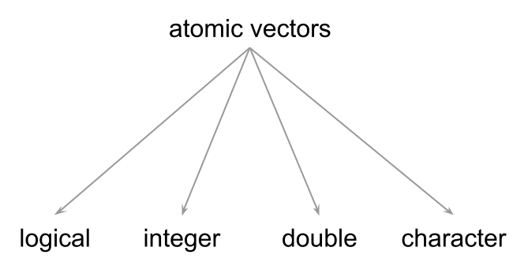
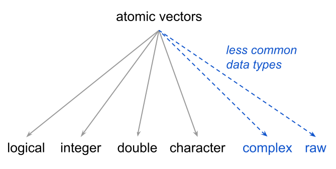
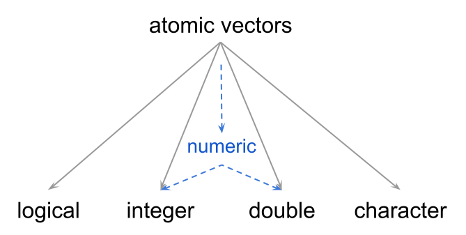

Vectors are the most basic kind of data objects in R. Pretty much all other R data objects are derived (or are built) from vectors. This is the reason why I like to say that, to a large extent, R is a vector-based programming language.
Based on my own experience, becoming proficient in R requires a solid understanding of the properties and behavior of R vectors.
2.1 Motivation
In the preceding chapter we ended up creating six main objects, which I’m bringing back for you in the following code chunk:
# inputsdeposit =1000rate =0.02# amounts at the end of years 1, 2, and 3amount1 = deposit * (1+ rate)amount2 = amount1 * (1+ rate)amount3 = amount2 * (1+ rate)# combine in a single objectamounts =c(amount1, amount2, amount3)amounts
[1] 1020.000 1040.400 1061.208
As we said, all these objects are vectors.
To give you a mental picture of what a vector could like, you can think of a vector as set of contiguous “cells” of data, like in the diagram below:
Think of vectors as contiguous cells of data.
Because this is supposed to be a “mental representation” of a vector, you can think of a vector either horizontally or vertically oriented. It does not really matter which orientation you prefer to visualize since R has no notion of a vector’s orientation.
Regardless of how you decide to picture a vector in your head, an important trait of this class of object, and of any other data object in R, is that the starting position or index is always number 1.
2.2 Vectors are Atomic Objects
The first thing you should learn about R vectors is that they are considered to be atomic structures, which is just the fancy name to indicate that all the elements in a vector are of the same type.
R has four main basic types of atomic vectors:
logical
integer
double or real
character
Here are simple examples of the four common data types of vectors:
Logical values, known as boolean values in other languages, are TRUE and FALSE. These values can be abbreviated by using their first letters T and F, although I discourage you from doing this because it can make code review a bit harder. Also, notice that these logical values are specified with upper case letters. Recall that R is case sensitive, so if you type True or False R will not recognize them as logical values.
Integer values have an awkward syntax. Notice the appended L when assigning number 1 to object x. This is not a typo. Rather, this is the syntax used in R to indicate that a number (with no decimals) is an integer.
If you just simply type a number like 1 or 5, even though cosmetically they correspond to the mathematical notion of integer numbers, R stores those numbers as double type. So if you want to declare those numbers as type integer, you should append an upper case letter L to encode them as 1L and 5L.
Character types, referred to as strings in other languages, are specified by surrounding characters within quotes: either double quotes "yosemite" or single quotes 'yosemite'. The important thing is to have an opening and a closing quote of the same kind.
The following diagram summarizes the four common data types of vectors.

Common data types of atomic vectors.
2.2.1 Complex and Raw Types
There are two additional types that are less commonly used: complex (for complex numbers), and raw (raw bytes) which is a binary format used by R.

The 4 most common, and 2 less common, data types of atomic vectors.
I got my first contact with R back in 2001, and I’ve been using it almost on a daily basis since 2005. I have never had the need to use raw vectors; R may be using them in the background but not me (at least not explicitly or consciously). As for complex numbers, I’ve seen them every once in a while when doing certain matrix algebra computations. But again, I haven’t had the need to intentionally work with complex values. I can say the same thing about most of my colleagues: they rarely use these data types. And I’m willing to bet that you will rarely use them too. But now you know, if you ever need to work with complex and/or raw values, they are available in R.
2.3 Types and Modes
How do you know that a given vector is of a certain data type? For better or worse, there is a couple of functions that allow you to answer this question:
typeof()
storage.mode()
mode()
Although not commonly used within the R community, my recommended function to determine the data type of a vector is typeof(). The reason for this recommendation is because typeof() returns the data types previously listed which are what most other programming languages use:
typeof(deposit)
[1] "double"
typeof(rate)
[1] "double"
You should know that among the R community, many useRs don’t really talk about types. Instead, because of historical reasons related to the S language—on which R is based—you will often hear useRs talking about modes. To further complicate matters, there is not just one but two functions related to the concept of mode: storage.mode() and mode().
storage.mode(deposit)
[1] "double"
mode(deposit)
[1] "numeric"
Both storage.mode() and mode() rely on the output of typeof(), and as their name indicate, provide information about the storage mode. So what is the difference between these functions?
For practical purposes, storage.mode() is similar to typeof(), in the sense that they both return the same output:
typeof(deposit)
[1] "double"
storage.mode(deposit)
[1] "double"
In turn, mode() behaves a bit different. mode() groups together types "double" and "integer" into a single mode called "numeric" because both data types are numeric values.
typeof(deposit)
[1] "double"
mode(deposit)
[1] "numeric"
The following diagram depicts the numeric mode of types integer and double:

Data types “integer” and “double” correspond to “numeric” mode.
R also comes with a set of testing functions to determine the type and mode of a given value:
is.logical() to test if a value is of type logical
is.integer() to test if a value is of type integer
is.double() to test if a value is of type double
is.numeric() to test if a value is of numeric mode: either integer or double
is.character() to test if a value is of type character
We discuss more details about how R handles data types in chapter More About Vectors. In the meantime, the following table shows basic examples of each common data type, and the output of associated functions that give you information about the type and mode of vectors:
Example
typeof()
storage.mode()
mode()
TRUE
"logical"
"logical"
"logical"
1L
"integer"
"integer"
"numeric"
1
"double"
"double"
"numeric"
"one"
"character"
"character"
"character"
2.4 Special Values
In addition to the four common data types, R also comes with a series of special values:
NULL is the null object (it has length zero). The way I like to think of this is as “nothing”; that is, an object that represents “nothing”.
NA, which stands for Not Available, indicates a missing value. By default, typing NA is stored as a logical value. But there are also special types of missing values.
NA_integer_
NA_real_
NA_character_
NaN indicates Not a Number. An example of this value is the output returned by computing the square root of a negative number: sqrt(-5)
Inf indicates positive infinite, e.g. 100/0
-Inf indicates negative infinite, e.g. -100/0
R also comes with a set of testing functions to determine if a given value is of a special kind:
is.null() to test if a value is NULL
is.na() to test if a value is NA
is.nan() to test if a value is NaN
is.infinite() to test if a value is Inf or -Inf
2.5 Length of Vectors
Another important property about vectors is that they have length, which refers to the number of elements or cells that they contain. If it helps, you can think of length as the “size” of a vector.
The simplest kind of vectors are single values—i.e. vectors with just one element. For example, objects such as deposit and rate are one-element vectors. To find the length of a vector you use the function length()
length(deposit)
[1] 1
length(amounts)
[1] 3
By the way, vectors can be of any length, including 0. We talk more about these special vectors in the next chapter.
No Scalars in R
In most other languages, a number like 5 or a logical TRUE are usually considered to be “scalars”. R, however, does not have the concept of “scalar”, instead the simplest data structure is that of a one-element vector. This means that when you type 5 R handles this data with a vector of length one.
2.6 Vector elements can have names
Another feature of vectors is that their elements can have names. For example, we have the amounts vector that contains the savings amounts at the end of years 1, 2, and 3:
amounts
[1] 1020.000 1040.400 1061.208
We can give names to the elements in amounts by using the names() function. We apply names() to amounts and we assign a vector of names like so:
2) Use the c() function to create a vector joint of logical values such that when printed it displays the values shown below:
[1] TRUE TRUE FALSE
Show answer
joint =c(TRUE, TRUE, FALSE)
3) Use the c() function to create a vector rates such that when printed it displays the values shown below:
[1] 0.02 0.03 0.04
Show answer
rates =c(0.02, 0.03, 0.04)
4) Use the function names() to give names to the elements of your vector rates. When printing rates you should get following output:
savings market certif
0.02 0.03 0.04
Show answer
names(rates) =c('savings', 'market', 'certif')
5) Use the c() function to create a vector years of integer values such that when printed it displays the values shown below. Recall that integer values are of the form 1L.
[1] 2 3 4
Show answer
years =c(2L, 3L, 4L)
6) Use the typeof() function to inspect the data type of accounts, joint, rates, and years. Confirm that their output is "character", "logical", "double" and "integer", respectively.